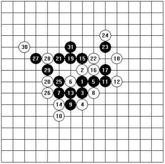

第二届“经纬杯”名人邀请赛自战解说
#1 第二届“经纬杯”名人邀请赛自战解说 作者：茗弈宽容 发表时间：2009-10-15 18:23:49
A 组第五轮
2004年5月2日 上海 五月苑大酒店
黑方 李洪斌
白方 三森政男
布局 松月
用时：黑方5分钟 白方40分钟
共31手 黑胜
第四轮我和矶部泰山九段苦战87手双方均无建树握手成和。本轮另外一盘山口真琴名人战胜了葛凌峰。
如此，山口和矶部积分领先，紧随其后的是我和陈霖。 本轮按照抽签的排序，由我执黑开局对战三森政男九段。
我和三森先生在2002年经纬杯比赛中有过一盘对局，彼此都印象深刻。这次比赛三森先生运气欠佳，错失不少机会。不过三森先生在对局中的全身心投入与执着的斗志，值得我们好好学习。
（实战谱1～12） 按照我赛前的准备，这盘我依然执黑“松月”布局，如果对手 交换，我执白准备了几种对策供实战选用。三森先生略微考虑后选择执白让我有些意外，“松月”相对来说是我准备充分的布局，难道……？
实战五手两打分别是实战的5和本图的A位。三森先生飞快的留下实战的黑5（我看到这里意识到我要胜了！如果是去年恐怕还不会有如此自信，经过近一年对“松月”的研究加上“松月”定式的写作过程，使我对“松月”一打的必胜已经相当熟悉。），以下双方落子飞快进行至白12告一段落。
对于黑13的选择我略做考虑。黑13有两个胜点可以选择，分别是13－B和13－C。13－B白棋选择相对13－C要少，而且我对13－B的变化相对熟悉。13－C后虽然也必胜，不过白棋防点非常多，在有限的时间里没必要把局面复杂化。 白12－D，13－E是主流松月一打必胜定式，从三森先生的选择来看，他还是对松月定式有一定了解的。 --------------------------------------------------------------------------------
（实战谱13～15） 实战黑13后，三森先生的白14唯一防下的很快（白14－A的变化见参考图一）。
黑15是绝妙的一手！呼应全局子力。黑15－B也是很强的下法，不过白16－C后黑困。实战进行至这里，三森先生似乎对黑15较为意外，重新端正了坐姿开始长考。我也没闲着，在回想如果三森九段下出白16－D最强防后，黑棋的种种下法。
（参考图一） 白14防守后，黑15～19好次序！尤其是黑棋多了19位的子力后，将来黑棋在下方的进攻中多有借用。黑23、25关联好手！本图的白26、28最强防。黑29以下追胜巧妙！ 如：白28－A，29－30后黑棋VCF胜。 如：白26－A，27－30，29－27后黑VCF胜。
--------------------------------------------------------------------------------
（实战谱16～31）

三森先生经过考虑后选择了实战的白16，这个16黑17、19两步后就必胜了，因为前一段时间薛文曦问过我这个变化，所以临场不用再次确认就下了下去。
实战的白20最强防，这时三森先生似乎已经感觉的局势不妙，叹了叹气摇了摇头。
黑21后双方下的很快，因为白棋没有选择。实战31后，三森先生认输了。如果白32－A，黑33以下按照B～E的次序VCF胜。
如：白20－F，21－G！ 白20－H，21－21，22－22，23－23，24－E，25－F，26－20，27－27，29－29！
局后复盘，问起三森先生怎么会选择松月黑5必胜打点？他回答大意是“知道黑5是必胜的，但是白12后的下法他没有找到黑棋如何胜，所以比赛中想向我请教”。随后我和三森先生摆了很多关于松月一打必胜的变化，三森先生看的很认真，直至后来我们被裁判“请”出了赛场。
这盘棋给我的感触很多……
［ 茗奕的飞猪 于
#2 Re:第二届“经纬杯”名人邀请赛自战解说 作者：茗弈求学 发表时间：2009-10-16 10:16:00
谢谢李老师,学习了.
#3 Re:第二届“经纬杯”名人邀请赛自战解说 作者：茗奕的飞猪 发表时间：2009-10-16 10:17:13
这么好的文章没人顶?#4 Re:第二届“经纬杯”名人邀请赛自战解说 作者：水月 发表时间：2009-10-16 11:23:23
呵呵前两天我才从我的硬盘里翻腾出来。。。。。。谢谢帮忙转载过来
［ 茗弈宽容 于 2009-10-16 11:27:53 时花20金币送鲜花一朵］
#5 Re:第二届“经纬杯”名人邀请赛自战解说 作者：水月 发表时间：2009-10-16 11:27:37
这是以前老版的中华连珠网的内容，改版后没来得及转到新版，就这两天抽空转出来一批。李老师的文章似乎还有几篇，有空我再发一下
#6 Re:第二届“经纬杯”名人邀请赛自战解说 作者：茗弈宽容 发表时间：2009-10-16 11:29:02
 阿劼 在你的地盘分了一羹不要见怪哈!谢谢.对了老版我还有几篇文章呢,顺便一起翻出来发了哈.
阿劼 在你的地盘分了一羹不要见怪哈!谢谢.对了老版我还有几篇文章呢,顺便一起翻出来发了哈.